Jay’s Notes
About
uncmbb.qmd
techs.qmd
talks.qmd
Jay’s Notes
Categories
All
(29)
R Markdown centered data analysis workflow
(how to use Python in R Markdown using reticulate package)
A summary is here, and the codes are here.
Oct 17, 2019
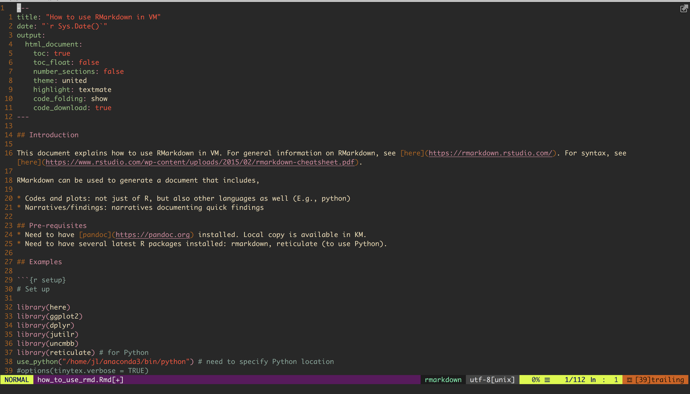
R Markdown in Vim
I saw this tweet a couple of days ago and decided to look for ways to use R Markdown more at work.
Apr 5, 2019
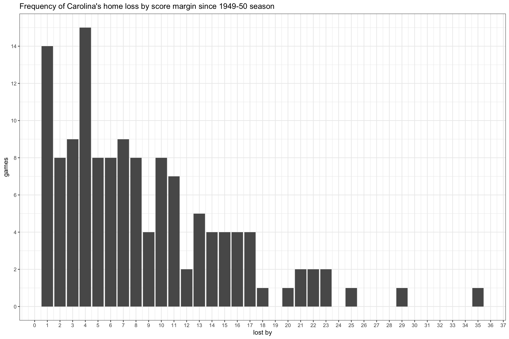
Coping with worst loss at home
It’s been a tough weekend, not least because Tar Heels lost at home. Sometimes I feel like I’m vested too much in the outcome of the Heel’s basketball games, and if my…
Jan 13, 2019
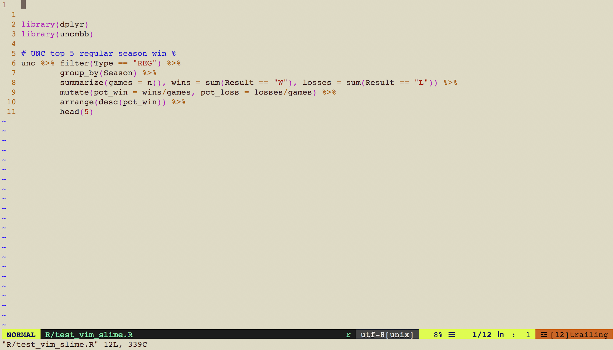
Vim, vim-slime, and screen
As much as I love using RStudio for everything
1
, there are times when I can’t really use it, i.e., for some projects at work in which I need to log in to some servers and do…
Oct 6, 2018
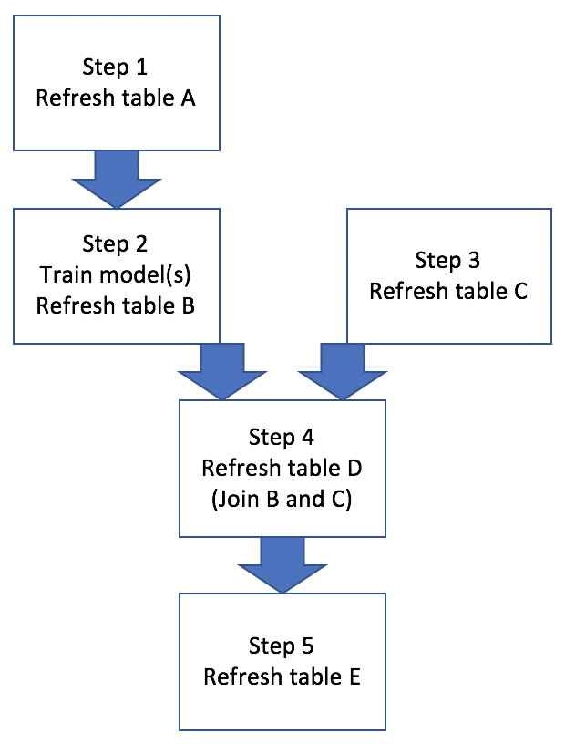
GNU Make for Data Analysis Workflow Management
I’ve finally started using GNU make as a data analysis workflow management tool. I knew it existed as a software “build” tool, and although I always thought Makefile
1
sound…
Aug 26, 2018
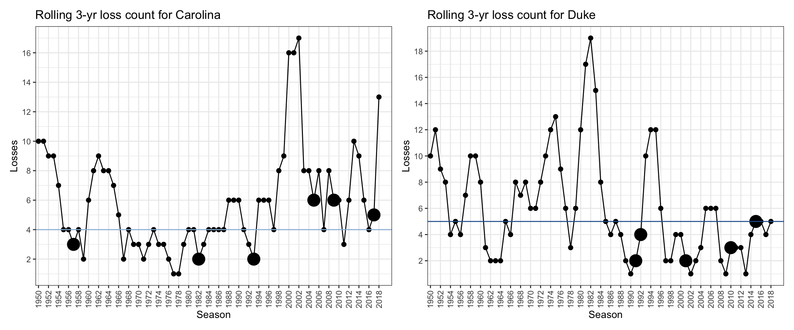
Home sweet dome
I ran into a post on the Tar Heel Blog (THB) that talks about the Tar Heel’s home court advantage in recent years. Since it’s been a while since I wrote anything about…
Aug 5, 2018
My old coding products
Lately I’ve been thinking about why I care much about everything R and sharing the joy of using R, which deserves its own post. Much of it has to do with how I did and did…
Jul 27, 2018
Comments on data analysis workflow
There are several benefits of establishing a good and routine data analysis workflow that you follow on a daily basis. At least two benefits come to mind immediately.
Jul 22, 2018
External presentation goal
Like Yihui (of blogdown and many other awesome R packages) whose goal is to publish a book a year
1
, I have a similar personal goal that I started last year. While I’d love…
Jul 22, 2018
Insert images in blogdown post, static directory, and xaringan
While working on yet another separate blog post, I needed to insert images in the post. I knew from rmarkdown syntax that I can use: , but then I…
May 17, 2018
Vim mode in RStudio
I heard about Vim mode in RStudio but haven’t really given it a try. While working on a new blog post (not this one), I decided to give it a try, as I had to keep switching…
May 11, 2018
rJava and Mac OS
For the past couple of days, I needed to install rJava package on my Mac, and boy did I know how complicated the process would turn out to be! I vaguely knew about the mess…
May 3, 2018
Package uncmbb updated!
Ever since UNCMBB team’s season ended about a month ago, I’ve been meaning to update the data in uncmbb package, and I finally got to it. Obviously the new version includes…
Apr 17, 2018
RSS feed and rbind github repo
Maëlle Salmon reminded me to submit posts/blog RSS feed to R weekly on my tweet, and I set out to do just that. I didn’t have much understanding as to how to though, and…
Feb 6, 2018
Run system commands or shell scripts from an interactive R session
When you are working in an interactive R shell and need to run some system commands, you can use a base R function
system
1
.
Feb 5, 2018
New Hugo theme
Last time, I wrote about a quiz from work, including the code solution. Unfortunately, I didn’t really like how the code block was printed in the minimal theme. I’m pretty…
Feb 3, 2018
Quiz from work
There are 25 black balls and 25 white balls in a jar. We take two balls at random from the jar, and the one of the three: (1) if two black balls are drawn, put them back in…
Feb 1, 2018
One year after rstudio::conf 2017
It was merely a name change, but with the new blog address at rbind.io, I’m excited about the fact that I am a blogger who uses his name in his blog address, because I’ve…
Jan 29, 2018
Blog at rbind.io
This weekend, I made a small but meaningful change to the blog that I started late last year. Initially, my blog was named UNCMBBTRIVIA to emphasize to the readers that this…
Jan 29, 2018
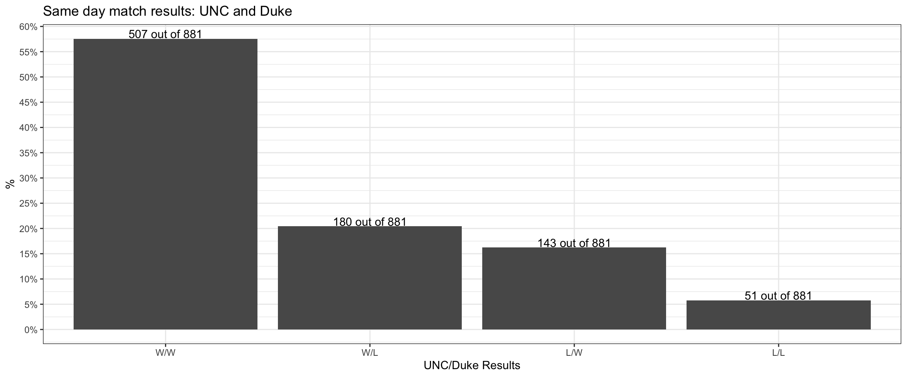
Same day match results: UNC and Duke
So both UNC and Duke lost today (Saturday, 2018-01-06). I’d think it’s pretty rare that such event (both teams losing on a same day) happens, and I got curious how rare it…
Jan 7, 2018
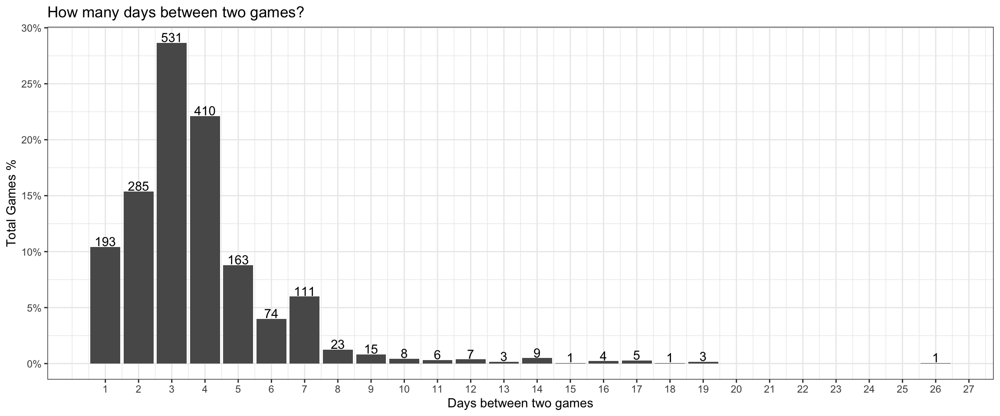
Days between games
After a long (exam) break, next up for the Tar Heels is Tennessee on Sunday, 12/17. 11 days since the last game against Western Carolina seemed unusually long to just…
Dec 15, 2017
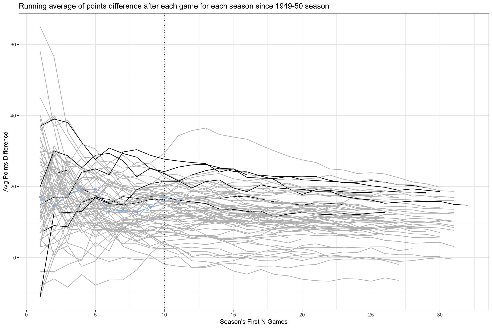
Average points difference through first 10 games
A quick update to the last post, where I looked at the (running) average of points difference through first 5 games then. 5 more games were played since then, so let’s look…
Dec 9, 2017
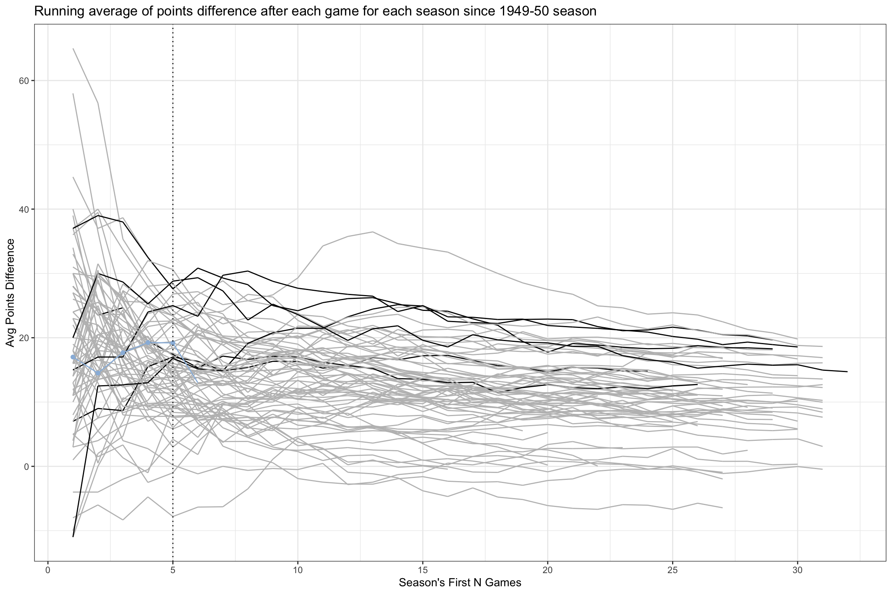
Average points difference through first N games
Time flies, and the Tar Heels played the season’s first 5 games already. And loosely speaking, they’ve played well so far (knocking on woods), to the eyes of just another…
Nov 25, 2017
5th year players
As I mentioned it in an earlier post, I’ve been wanting to add each season’s players info to my data source. Although it needs more cleaning still, I finally got around to…
Nov 5, 2017
Season’s first game
UNC MBB team had its first official exhibition game of the 2017-18 season this past week against Barton college. It was the first official exhibition, because there was a…
Oct 29, 2017
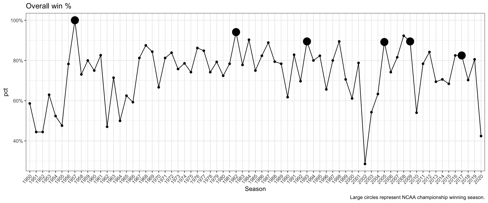
Season win percentage
This past week, I was in a presentation training, and all the participants had to select a topic on the last day of training to give a (perfect) 15-min presentation. You…
Oct 22, 2017
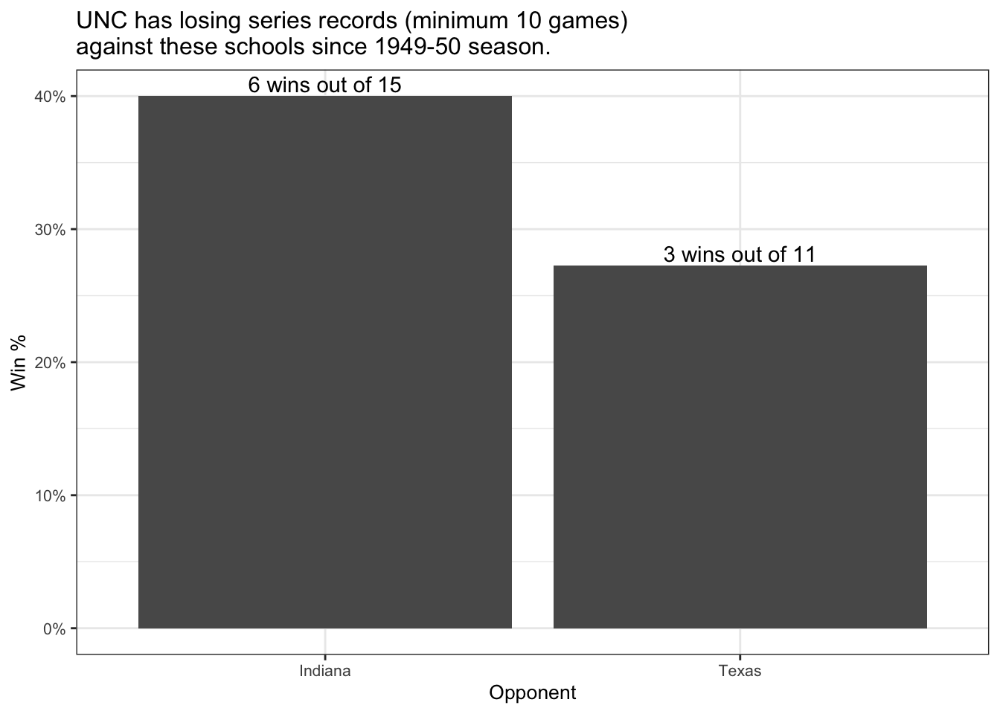
Losing Series
In my first uncmbbtrivia post last week, I looked at perfect winning series of UNC MBB team, particularly looking for those schools that the team has never lost to since…
Oct 8, 2017
Hello World!
Welcome to UNC MBB TRIVIA! Just another casual fan here to talk about UNC Men’s Basketball trivia time to time for all Tar Heels fans to enjoy. Stay tuned!
Oct 1, 2017
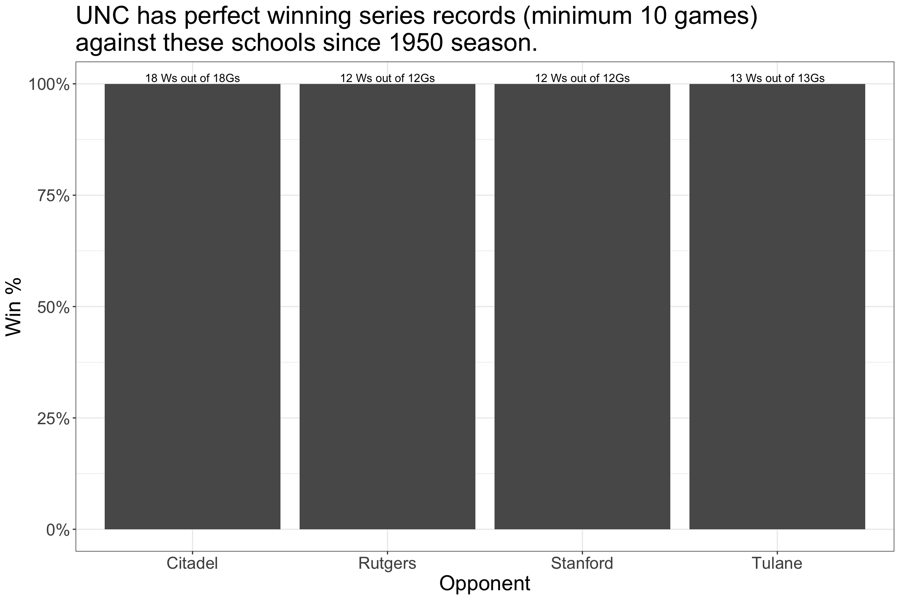
Winning Series
Here it is, the very first trivia! Frankly I was initially curious which schools have winning series against UNC and found out which (and here’s the link to that post), but…
Oct 1, 2017
No matching items